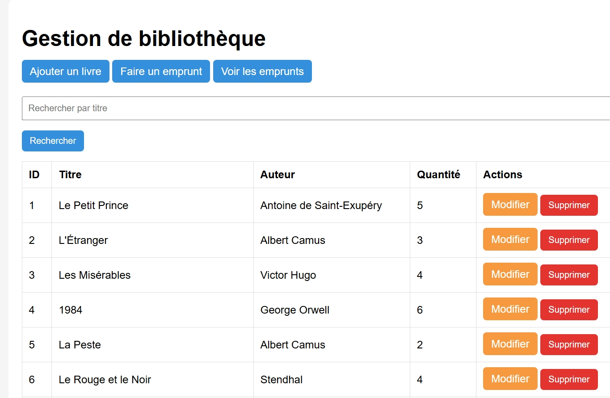
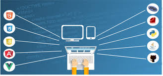
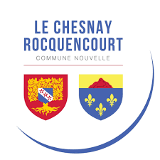
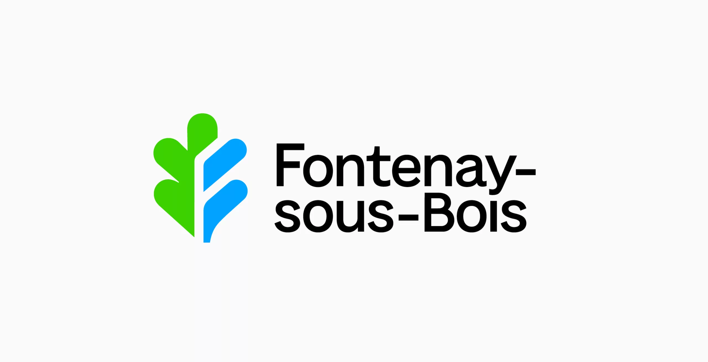

Gestion de bibliothèque — Laravel
Application web permettant de gérer des livres et leurs emprunts. L’utilisateur peut consulter, ajouter, modifier ou supprimer un livre et enregistrer un emprunt.
Portfolio BTS SIO - Option SLAM
Étudiante en BTS SIO option SLAM, passionnée par le développement d’applications web, la gestion de bases de données et les solutions numériques modernes.

Je m’appelle Meriem Kachaf, étudiante en BTS SIO option SLAM. Je suis passionnée par l’informatique, le développement web et les nouvelles technologies.
Mon parcours me permet de développer des compétences en programmation, en bases de données, en support informatique et en conception de solutions adaptées aux besoins des utilisateurs.
À travers ce portfolio, je présente mes projets, mes expériences professionnelles et ma veille technologique.
H3 HITEMA, Paris
Réorientation en informatique pour suivre ma passion pour la programmation et le développement.
ECS Paris, Paris
Institut spécialisé de gestion et d’informatique, Casablanca
Lycée Farabi, Casablanca, Maroc
HTML, CSS, JavaScript, PHP, Java, Laravel, JavaFX
MySQL, SQL, phpMyAdmin, conception et gestion de données
Git, GitHub, Maven, IntelliJ IDEA, XAMPP, GLPI, Proxmox
Support niveau 1 et 2, maintenance, diagnostic et gestion d’incidents

Application web permettant de gérer des livres et leurs emprunts. L’utilisateur peut consulter, ajouter, modifier ou supprimer un livre et enregistrer un emprunt.
Application client lourd développée en JavaFX permettant de gérer les matchs, les supporters et les tickets via une interface graphique reliée à une base de données MySQL.

Site vitrine de décoration intérieure conçu en HTML, CSS et JavaScript, avec une présentation moderne et une mise en valeur visuelle des produits.

Installation et déploiement de postes, manipulation d’une base SQL via Mainti4, création de scripts PowerShell et support technique aux utilisateurs via GLPI.

Support informatique de niveau 1 et 2, diagnostic et suivi des incidents matériels et logiciels, installation, configuration et maintenance des postes de travail.
Dans le cadre de ma veille technologique, je m’intéresse à l’impact de l’intelligence artificielle dans la cybersécurité, notamment aux deepfakes.
Un article récent explique que l’IA peut être utilisée pour créer de faux contenus audio ou vidéo destinés à tromper les entreprises et à usurper l’identité de dirigeants.
Pour suivre ces évolutions, j’utilise des outils comme Google Alerts et Feedly afin de consulter régulièrement des sources fiables et récentes.
Vous pouvez consulter et télécharger mon CV pour découvrir plus en détail mon parcours, mes compétences et mes expériences.
Télécharger mon CV